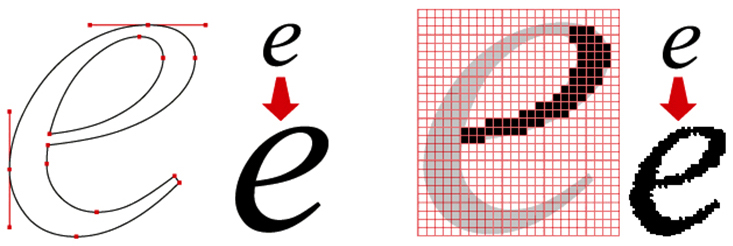

Splošnonamenski programski jezik Python je trenutno najpopularnejši jezik zaradi enostavne sintakse in obilice prosto-dostopnih programskih knjižnic, dočim pa ni najhitrejši jezik. Jezik se interpretira, kar pomeni, da program demo.py v ukazni vrstici izvedemo s python demo.py.
V programskem jeziku Python za grafičen prikaz podatkov najpogosteje uporabljamo knjižnico pyplot modula matplotlib ali njene razširitve. Risanje grafov je podobno kot v jeziku za numerično računanje MATLAB.
import math # pomožne knjižnice
import random
import datetime
import numpy as np
import matplotlib.pyplot as pltNajprej s funkcijo figure ustvarimo površino za risanje grafa fig, ki ji lahko določimo velikost v palcih figsize. Vsi nadaljnji klici metod in funkcij se vedno nanašajo na trenuten graf. Graf lahko prikažemo z metodo show in na koncu zapremo z metodo close. Graf lahko tudi shranimo v datoteko z uporabo metode savefig.
fig = plt.figure(figsize = [6.4, 4.8])
...
plt.show()
plt.close()
fig.savefig('plot.pdf', bbox_inches = 'tight')Množico točk v ravnini narišemo z uporabo metode scatter, ki ji podamo seznama X in Y koordinat točk v ravnini. Barvo točk določimo s parametrom color (npr. 'k', 'black', [0, 0, 0]), obliko točk s parametrom marker (npr. 'o', 's', '*') in velikost točk s parametrom s (npr. 25). Vsi podprti parametri metode so opisani v dokumentaciji na naslovu https://matplotlib.org/stable/api/_as_gen/matplotlib.pyplot.scatter.html.
X = range(100)
Y = [random.random() for x in X]
plt.scatter(X, Y, color = 'k', marker = 'o', s = 25)Primer uporabe metode scatter je prikazan spodaj.
Krivuljo v ravnini narišemo z uporabo metode plot, ki ji podamo seznama X in Y koordinat točk krivulje. Barvo krivulje določimo s parametrom color (npr. 'k', 'y', 'g'), obliko krivulje s parametrom linestyle (npr. '-', '--', ':'), debelino krivulje s parametrom linewidth (npr. 3), obliko točk s parametrom marker (npr. '', 'o', '*') in velikost točk s parametrom markersize (npr. 3). Vsi podprti parametri metode so opisani v dokumentaciji na naslovu https://matplotlib.org/stable/api/_as_gen/matplotlib.pyplot.plot.html.
X = np.arange(0, 4 * math.pi, 0.1)
Y1 = [math.sin(x) for x in X]
Y2 = [math.cos(x) for x in X]
plt.plot(X, Y1, color = 'y', linestyle = '--', linewidth = 3)
plt.plot(X, Y2, color = 'g', linestyle = '-', linewidth = 1, marker = 'o', markersize = 3)Primer uporabe metode plot je prikazan spodaj.
Krivuljo z intervali napak narišemo z uporabo metode errorbar, ki deluje podobno kot metoda plot, le da ji lahko podamo tudi seznam napak E preko parametra yerr. Barvo intervalov napak določimo s parametrom ecolor (npr. 'k', 'y', 'g') debelino intervalov napak s parametrom elinewidth (npr. 2) in širino krajišč intervalov s parametrom capsize (npr. 4). Vsi podprti parametri metode so opisani v dokumentaciji na naslovu https://matplotlib.org/stable/api/_as_gen/matplotlib.pyplot.errorbar.html.
X = np.arange(-10, 10, 0.5)
Y = [1 / (1 + math.exp(-x)) for x in X]
E = [0.1 * random.random() for y in Y]
plt.errorbar(X, Y, yerr = E, color = 'g', ecolor = 'y', elinewidth = 2, capsize = 4)Primer uporabe metode errorbar je prikazan spodaj.
Stolpični diagram narišemo z uporabo metode bar, ki ji podamo seznam koordinat stolpcev X in seznam višin stolpcev H. Barvo stolpcev in njihovih robov določimo s parametroma color in edgecolor (npr. 'k', 'g', 'gray'), širino stolpcev s parametrom width (npr. 0.8) in debelino robov stolpcev s parametrom linewidth (npr. 1). Vsi podprti parametri metode so opisani v dokumentaciji na naslovu https://matplotlib.org/stable/api/_as_gen/matplotlib.pyplot.bar.html.
X = range(33)
H = [math.log(x + 1) for x in X]
plt.bar(X, H, color = 'g', edgecolor = 'y', width = 0.8, linewidth = 1)Primer uporabe metode bar je prikazan spodaj.
Tortni diagram narišemo z uporabo metode pie, ki ji podamo seznam (relativnih) velikosti krožnih izsekov X. Barvo krožnih izsekov določimo s parametrom colors (tj. seznam barv), oznake krožnih izsekov določimo s parametrom labels (tj. seznam nizov znakov) in polmer diagrama določimo s parametrom radius (npr. 1). Vsi podprti parametri metode so opisani v dokumentaciji na naslovu https://matplotlib.org/stable/api/_as_gen/matplotlib.pyplot.pie.html.
X = [1, 2, 3, 4]
C = ['k', 'y', 'g', 'gray']
L = ["{:d}%".format(10 * x) for x in X]
plt.pie(X, colors = C, labels = L, radius = 1)Primer uporabe metode pie je prikazan spodaj.
Ostale pogosto uporabljene metode za risanje grafov (npr. hbar, boxplot, fill_between) so opisane v dokumentaciji na naslovu https://matplotlib.org/stable/plot_types/index.html. Pri risanju bolj naprednih grafov navadno uporabljamo barvne palete opisane na naslovu https://matplotlib.org/stable/users/explain/colors/index.html.
Naslov grafa in oznake osi določimo z uporabo metod title, ylabel in xlabel. Družino pisave določimo s parametrom fontname (npr. 'Helvetica'), velikost pisave določimo s parametrom fontsize (npr. 15), debelino pisave določimo s parametrom fontweight (npr. 'bold'), obliko pisave določimo s parametrom style (npr. 'italic') itd. Pri tem lahko uporabljamo tudi matematično okolje $...$ podobno kot v sistemu (La)TeX, dočim pa je nabor podprtih funkcij omejen (https://matplotlib.org/stable/tutorials/text/mathtext.html).
X = np.arange(-5, 5, 0.01)
Y1 = [max(0, x / 5) for x in X] # ReLU
Y2 = [(math.tanh(x) + 1) / 2 for x in X] # tanh
Y3 = [1 / (1 + math.exp(-x)) for x in X] # logistic
plt.plot(X, Y1, ':k', label = r"$\max(0,ax)$")
plt.plot(X, Y2, '-g', linewidth = 2, label = r"$\frac{{\rm tanh}(x)+1}{2}$")
plt.plot(X, Y3, '--y', linewidth = 3, label = r"$\frac{1}{1+e^{-x}}$")
plt.title("Aktivacijske funkcije", fontsize = 15)
plt.ylabel(r"Vrednost funkcije $f(x)$")
plt.xlabel(r"Neodvisna spremenljivka $x$")Legendo grafa dodamo s klicem metode legend, pri čimer lahko določimo lokacijo legende s parametrom loc (npr. 'best', 'upper left') itd. V legendo so dodani vsi grafi, ki imajo določeno labelo s parametrom label.
plt.legend(loc = 'best', frameon = False, fontsize = 13)Oznake na grafu dodamo z uporabo metod text in annotate, kot je prikazano spodaj.
plt.text(1.5, 0.15, "ReLU", fontsize = 13)
plt.annotate(r"$f(0)=0.5$", xy = (0, 0.5), xytext = (-2.5, 0.5), \
arrowprops = {'arrowstyle': '->'})Primer grafa z naslovom, oznakami osi, legendo in anotacijami je prikazan spodaj.
Z uporabo funkcije subplots lahko ustvarimo mrežo za risanje več grafov fig, pri čimer določimo število vrstic in stolpcev mreže ter velikost v palcih figsize. Funkcija vrne zbirko osi grafov axs, ki zaporedoma predstavljajo posamezne grafe mreže (od leve proti desni, od zgoraj navzdol). Vse nadaljnje klice grafičnih metod in funkcij nato izvedemo nad izbranim grafom kot npr. axs[...].plot (namesto plt.plot).
fig, axs = plt.subplots(1, 3, figsize = [12.8, 4.8])Omejitve osi lahko določimo preko parametrov ylim in xlim. Vrsto osi lahko izberemo z uporabo metod semilogy, semilogx in loglog (namesto plot).
X = np.arange(1, 25, 0.1)
Y1 = X
Y2 = [x**2 for x in X]
Y3 = [math.exp(x) for x in X]
axs[0].plot(X, Y1, ':k', label = r"$y=x$")
axs[0].plot(X, Y2, '-g', label = r"$y=x^2$")
axs[0].plot(X, Y3, '--y', label = r"$y=e^x$")
axs[0].title.set_text("Linearne osi")
axs[0].set_ylim([-100, 1100])
axs[0].legend()
axs[1].semilogy(X, Y1, ':k', label = r"$y=x$")
axs[1].semilogy(X, Y2, '-g', label = r"$y=x^2$")
axs[1].semilogy(X, Y3, '--y', label = r"$y=e^x$")
axs[1].title.set_text(r"Logaritemska os $y$")
axs[1].legend()
axs[2].loglog(X, Y1, ':k', label = r"$y=x$")
axs[2].loglog(X, Y2, '-g', label = r"$y=x^2$")
axs[2].loglog(X, Y3, '--y', label = r"$y=e^x$")
axs[2].title.set_text("Logaritemske osi")
axs[2].legend()Primer uporabe različnih vrst in omejitev osi je prikazan spodaj.
Vrednosti osi niso nujno numerične vrednosti, ampak so lahko nizi znakov, datumi, labele itd.
C = ["Foo", "Bar", "Baz"]
D = [datetime.datetime(2022, 12, 31), datetime.datetime(2023, 1, 1), datetime.datetime(2023, 1, 2)]
Y = [3, 9, 6]
axs[0].bar(C, Y, color = 'y', edgecolor = 'g', linewidth = 3)
axs[0].set_title("Kategorije")
axs[1].plot(D, Y, '-g*', linewidth = 3, markersize = 24)
axs[1].set_title("Datumi")
axs[1].set_xticks(D)
axs[2].plot(D, Y, '-ys', linewidth = 3, markersize = 12)
axs[2].set_title("Labele")
axs[2].set_xticks(ticks = D, labels = ["Silvestrovo", "Novo leto", "2. januar"])Primer grafov z različnimi vrednostmi osi je prikazan spodaj.
Slike v računalniku so lahko predstavljene na dva načina. Vektorske slike v formatu PDF, SVG ali EPS so zbirke geometrijskih objektov z določeno lokacijo, orientacijo, velikostjo in barvo (npr. črn krog v središču slike z izbranim polmerom). Bitne ali rastrske slike v formatu PNG, JPG ali GIF so dvodimenzionalna matrika pikslov z določeno barvo (npr. fotografija).
Barve pikslov so kodirane v formatu RGB z intenziteto rdeče, zelene in modre barve \([r,g,b]\), kjer velja \(r,g,b\in[0,1]\). Tako \([1,0,0]\), \([0,1,0]\) in \([0,0,1]\) zaporedoma predstavljajo rdečo, zeleno in modro barvo. Za sivinske barve velja \(r=g=b\), pri čimer \([0,0,0]\) predstavlja črno barvo in \([1,1,1]\) belo barvo. Alternativno lahko dodamo še četrto komponento kot \([r,g,b,a]\), ki določa prosojnost barve. Pri tem \(a=1\) predstavlja neprosojno barvo (privzeto), \(a=0\) pa predstavlja popolnoma prosojno barvo (tj. nevidno).

V programskem jeziku Python za delo z bitnimi slikami najpogosteje uporabljamo knjižnico image modula matplotlib ali njene razširitve.
import random # pomožne knjižnice
import numpy as np
import matplotlib.image as im
import matplotlib.pyplot as pltSliko lahko preberemo iz datoteke z uporabo funkcije imread in shranimo v datoteko z uporabo metode imsave. Slika img je dejansko predstavljena s tridimenzionalno NumPy tabelo, ki jo uporabljamo enako kot seznam seznamov seznamov števil. Atribut shape hrani nabor treh vrednost, ki zaporedoma predstavljajo višino in širino slike v pikslih ter število barvnih komponent.
img = im.imread('image.png')
print(img[0][0][0]) # rdeča komponenta prvega piksla
h, w, c = img.shape # višina, širina, 3 ali 4
im.imsave('image.png', img)Popolnoma črno sliko lahko ustvarimo z uporabo NumPy funkcije zeros, belo sliko pa z uporabo NumPy funkcije ones.
black = np.zeros((h, w, 3))
white = np.ones((h, w, 3))Barvno sliko pretvorimo v sivinsko sliko tako, da vse barvne komponente nastavimo na njihovo povprečje. Pri ustvarjanju slik si lahko pomagamo z razširitvami NumPy tabel napram običajnim seznamom (glej vodič na naslovu https://numpy.org/doc/stable/user/absolute_beginners.html).
gs = np.ones((h, w, 3))
for i in range(h):
for j in range(w):
gs[i][j] = sum(img[i][j][:3]) / 3
conc = np.concatenate((img, np.ones((h, 300, 3)), gs), axis = 1)Primer ustvarjanja sivinske slike je prikazan spodaj.
Sliko lahko narišemo na graf z uporabo metode imshow. Pri tem se koordinatno izhodišče privzeto postavi v zgornji levi kot in vrednosti na ordinatni osi naraščajo od zgoraj navzdol.
fig = plt.figure()
plt.imshow(img) # risanje slike
#plt.axis('off')
X = range(0, w, 25) # naključna krivulja
Y = [h * random.random() for _ in X]
plt.plot(X, Y, '-w', linewidth = 3)
plt.show()Primer risanja slike na graf je prikazan spodaj.